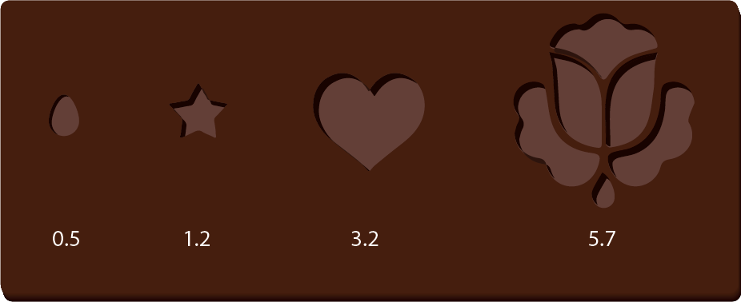

The Knapsack Problem
The Knapsack Problem is a classical example of heuristic algorithms. It originates from the need of accumulating many items, each of which belong to different categories of a measurable value (e.g. size, volume, weight, ...), in order to fill up a container.
Let's suppose you have a bussiness making chocolates during Easter. Your data shows that the total
amount of chocolate you spent (on average) over the holidays is 1,200 ml. Needless to
say, that's
a lot of chocolate. But chocolate waffles are expensive, and your starting bussiness cannot afford
wasting
the valuable resource; you have to use and sell the last ml of this chocolate, every last drop.
Given in milliliters (ml), your company has four chocolate molds for this season:

For practical purposes, we assume that the number of molds available is infinite. That way we'll be able
to use the same type of mold without restrictions. What is the winning combination of molds that will
use exactly 1,200 ml OR something as close as possible to it?
The parameters of the Algorithm
- TARGET: float - the total amount of resource that has to be spent
- EPOCHS: int - the total number of iterations we'll use to try finding the best combination
- AVAILABLE_MOLDS: [MOLD, ...] - the available molds to pick from
- ITERATIONS: int - the total number of iterations we'll use to find a combination of molds that matches TARGET
- LIST_OF_MOLD: [MOLD, ...] - candidate list of MOLDs during one epoch of EPOCHS
- BEST_LIST_OF_MOLD: the best list of molds out of the candidates
- VOLUME: float - The added volume of all items in the current candidate LIST_OF_MOLD
- BEST_VOLUME: float - the added volume of all items in the BEST_LIST_OF_MOLD
- COUNT: int - the total number of trials that we used to get a VOLUME as close as a TARGET
#################### MODULES ############### import random #################### DD ############### EPOCHS = 100 ITERATIONS = 1000 # DD. MOLD # mold = {"ITEM":str, "WEIGHT":float} # interp. the id of a mold used to fill chocolate mold_A = {"ITEM":"A", "WEIGHT":0.5} mold_B = {"ITEM":"B", "WEIGHT":1.2} mold_C = {"ITEM":"C", "WEIGHT":3.2} mold_D = {"ITEM":"D", "WEIGHT":5.7} # DD. AVAILABLE_MOLDS # avalMold = [MOLD, n=4] # interp. the list of available molds avalMold = [mold_A ,mold_B ,mold_C ,mold_D ] # TEMPLATE FOR AVALMOLD # for mold in avalMold: # ... mold # DD. TARGET # ta = float # interp. the total amount of chocolate volume to fill the molds with ta = 1200 # DD. LIST_OF_MOLD # lomold = [MOLD, ...] # interp. the list of molds to make a candidate selection lomold = [] # DD. BEST_LIST_OF_MOLD # best_lomold = LIST_OF_MOLD # interp. the best list of mold found so far best_lomold = lomold # DD. VOLUME # vol = float # interp. the added volume of all items in the LIST_OF_MOLD vol = 0 # DD. BEST_VOLUME # best_vol = float # interp. the added volume of all items in the BEST_LIST_OF_MOLD best_vol = vol # DD. COUNT # count = 0 # interp. the total number of trials that we used to get a VOLUME as close as a TOTAL_AMNT count = 0
The Algorithm
- For every EPOCH:
- reset VOLUME, COUNT, LIST_OF_MOLD
- while the added weight of LIST_OF_MOLD is less than TARGET, AND COUNT is less than ITERATIONS
- pick a new candidate item from AVAILABLE_MOLDS
- is MOLD weight added to the total VOLUME less or equal than TARGET? T: add MOLD to LIST_OF_MOLD and MOLD weight to VOLUME
- add 1 to count
- is the VOLUME bigger or equal than BEST_VOLUME? T: make BEST_VOLUME = VOLUME, and BEST_MOLD = LIST_OF_MOLD
- Extract and print every mold and their quantities